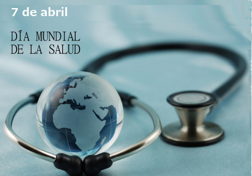

DIA MUNDIAL DE LA SALUD
IFOGRAFIA
La Salud en la Humanidad
El Día Mundial de la Salud se celebra cada 7 de abril en conmemoración a la fundación de la Organización Mundial de la Salud (OMS). Esta institución fue creada en 1948 por la ONU para que gestione políticas de prevención, promoción e intervención en la materia. Esta fecha busca que las comunidades realicen actividades que mejoren su calidad de vida.
- Todos los años se elige un tema prioritario sobre el cual difundir información y generar conciencia. En 2016 la OMS prestará particular atención a la diabetes.Esta es una enfermedad crónica que produce elevadas concentraciones de glucosa en la sangre.
- Así como la configuración y administración de plataforma e-learning y
- Comercio electrónico.
- Acrecentar la concientización respecto del aumento de la diabetes y de sus consecuencias, en particular en los países de ingresos bajos.
- Impulsar actividades para hacer frente esta enfermedad, con medidas para prevenirla, diagnosticarla y atender a quienes la padecen.
- Impulsar actividades para hacer frente esta enfermedad, con medidas para prevenirla, diagnosticarla y atender a quienes la padecen.
.jpg)
-
¿Cuando y porque se celebra?
-
¿Que se trata de conseguir con la campaña?
-
¿Que hace la OMS?
-
Covetura sanitaria Universal:
-
¿Que es lo que no incluyela cobertura sanitaria universal?
Ir a la pagina de el Dia Mundial de la Salud